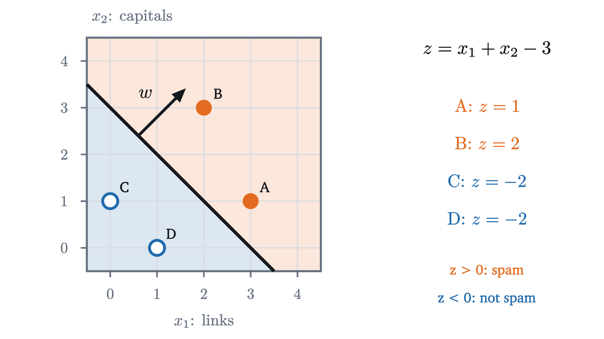
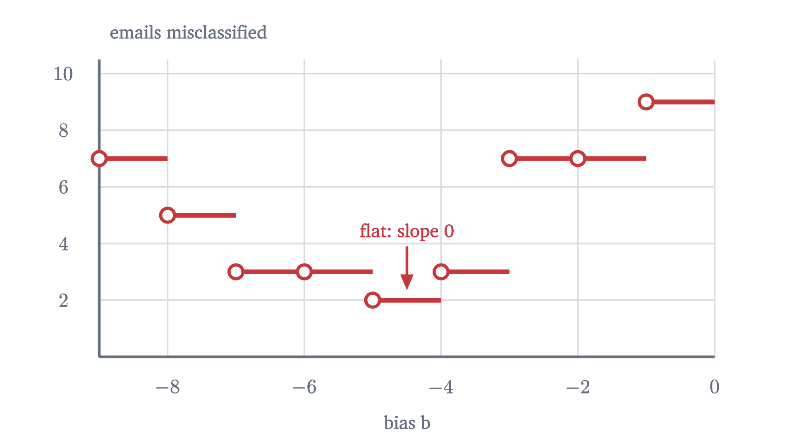
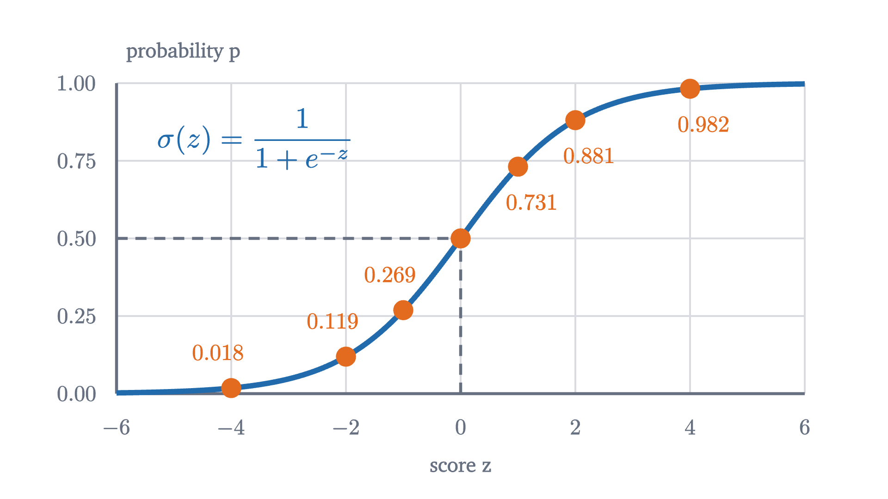
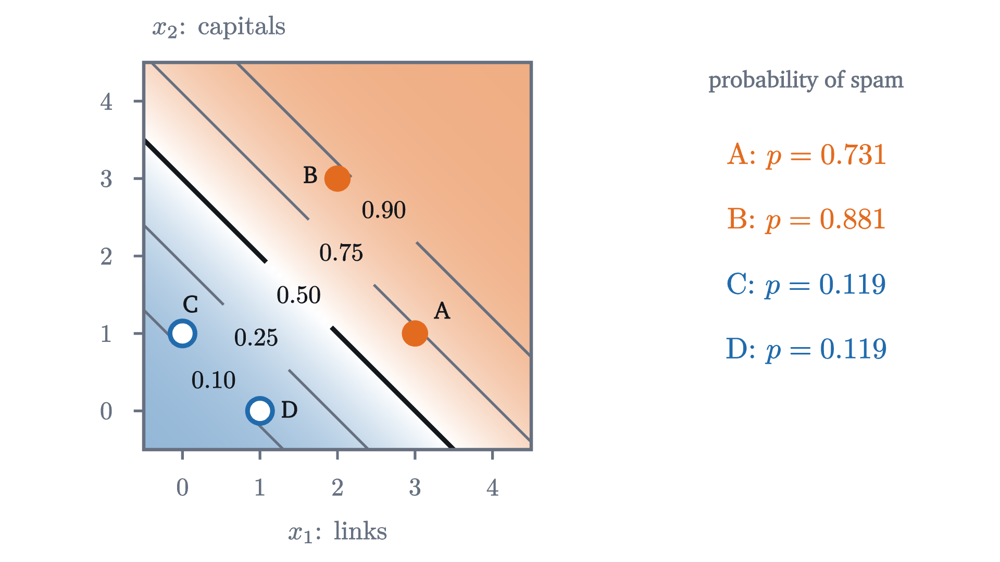
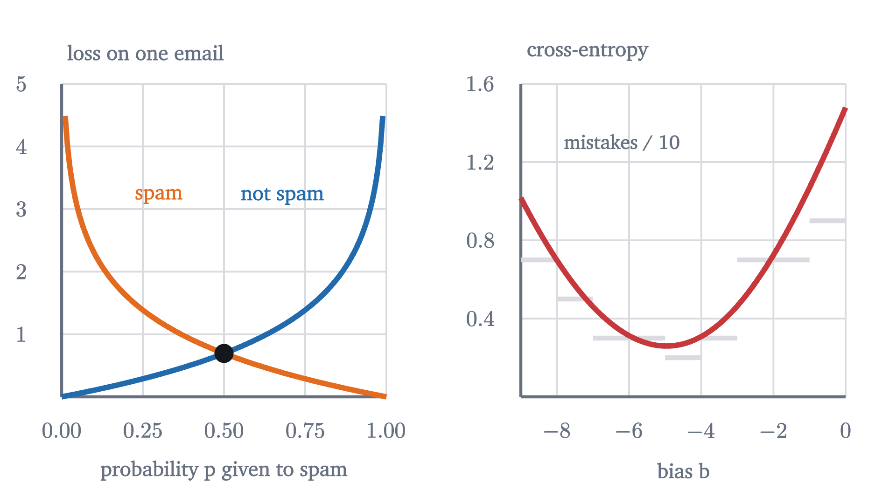
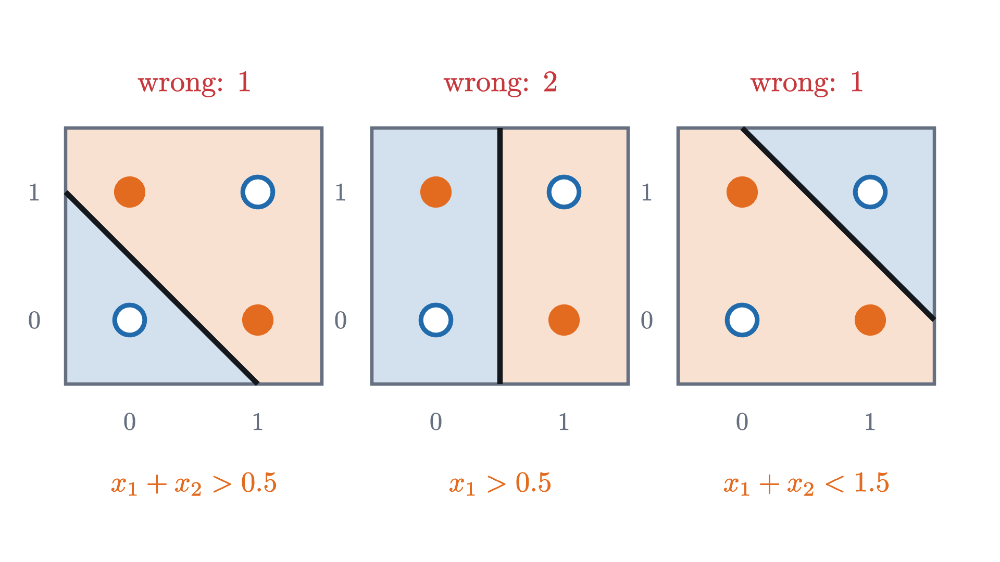

Classification: drawing a line between yes and no
Logistic regression from the ground up: the sigmoid from log-odds, cross-entropy from maximum likelihood, the gradient derived in full, and why XOR defeats it.
AssumesGradient descent: learning by walking downhillWhat a logarithm is: turning multiplication into additionThe product rule and the chain rule, seen
A spam filter looks at an email and answers yes or no. The line-fitting model of the first lesson cannot give that answer: it outputs a number like 3.5, and “this email is 3.5” means nothing. You could decide that the two answers are the numbers 1 and 0 and fit a line anyway, but then what does a prediction of $1.7$ mean, or $-0.4$? And squared error would scold the model for predicting $1.7$ on an email that really is spam, which is to say for being too sure of a correct answer.
Predicting a category is called classification. It needs a different model and a different loss, and both can be derived instead of guessed. We will derive them, train the model with gradient descent, and then find a set of four points that defeats it.
A line that splits the plane
Describe each email by two numbers: $x_1$, the number of links it contains, and $x_2$, the number of words written entirely in capitals. Here are four emails.
| Links $x_1$ | Capitals $x_2$ | Spam? | |
|---|---|---|---|
| A | 3 | 1 | yes |
| B | 2 | 3 | yes |
| C | 0 | 1 | no |
| D | 1 | 0 | no |
The spam has more of both. So try the simplest possible rule: add the two counts, and call the email spam if the total exceeds 3. Written as a formula, compute the score
and answer “spam” when $z > 0$. The scores of A, B, C, D are $1, 2, -2, -2$, so the rule gets all four right. The emails with $z = 0$ exactly lie on the line $x_1 + x_2 = 3$, and the rule says spam on one side of it and not spam on the other.

In general the score is $z = w_1x_1 + w_2x_2 + b$, with two weights and an intercept, usually called the bias in this setting. The set where $z = 0$ is a straight line, the decision boundary. The weight vector $w = (w_1, w_2)$ is perpendicular to it: moving along the boundary leaves $z$ unchanged, so the direction of motion has zero dot product with $w$. And $z$ grows as you move in the direction of $w$. In fact $z / |w|$ is the signed distance from the point to the boundary, positive on the side $w$ points to.
So the dials are $w_1$, $w_2$ and $b$, and training should set them. For that we need a loss.
The obvious loss has no slope
The obvious loss is the number of emails the rule gets wrong. Fix the weights at $w = (1, 1)$ and slide the line across the twenty emails of the opening figure by changing $b$.

Stand anywhere on this staircase and ask which way is downhill. The slope is zero. Gradient descent multiplies the slope by the learning rate and moves by that amount, so it does not move at all. The count of mistakes records only whether each email is on the wrong side. It does not record that the line is about to cross one, and so it cannot tell a small change of the dials that helps from one that hurts.
What is missing is a notion of degree. An email far on the spam side should count as “definitely spam”, and one just across the line as “barely spam”. If the model’s output moved smoothly between those, the loss would have a slope. The natural quantity with degrees is a probability.
From a score to a probability
We want to turn the score $z$, which can be any real number, into a probability $p$ that the email is spam, which must lie between 0 and 1. A large positive $z$ should give $p$ near 1, a large negative $z$ should give $p$ near 0, and $z = 0$ should give $p = \frac12$.
Using $p = z$ directly is impossible, since $z$ is unbounded. So transform the probability into something unbounded. Gamblers already have such a transformation: the odds in favor of an event, $\dfrac{p}{1 - p}$. A probability of $\frac34$ is odds of 3 (three to one); $\frac12$ is odds of 1; $\frac14$ is odds of $\frac13$. Odds run over all positive numbers. Taking the natural logarithm stretches the positive numbers over the whole real line and puts even odds at zero:
The log-odds has the range and the symmetry that the score has. So make the simplest assumption that connects them, that they are equal:
Pause and try
Solve this equation for $p$. Then compute $p$ for $z = 0$, $z = 2$ and $z = -2$, using $e^2 \approx 7.389$.
Show answerHide answer
Exponentiate: $\frac{p}{1 - p} = e^z$, so $p = e^z(1 - p)$, so $p\,(1 + e^z) = e^z$, and $p = \dfrac{e^z}{1 + e^z} = \dfrac{1}{1 + e^{-z}}$. At $z = 0$: $p = \frac12$. At $z = 2$: $p = 7.389/8.389 \approx 0.881$. At $z = -2$: $p = 1/8.389 \approx 0.119$. The last two add to 1.
The sigmoid is the inverse of the log-odds, so the model is the statement “the log-odds of spam is a linear function of the features”. That is an assumption about the world, and it can be wrong. We have not shown that it is the only way to turn a linear score into a probability, only that it is a natural one. Three properties of $\sigma$ will be used below. Its values lie strictly between 0 and 1, because $e^{-z} > 0$. It satisfies $\sigma(-z) = 1 - \sigma(z)$, as the exercise suggested: multiply the numerator and denominator of $\frac{1}{1 + e^{z}}$ by $e^{-z}$. And its derivative is
by the chain rule applied to $(1 + e^{-z})^{-1}$.

The model with $w = (1, 1)$, $b = -3$ now says more than yes or no. Email A has score 1 and probability $\sigma(1) \approx 0.731$ of being spam. Email B has score 2 and probability $0.881$. Emails C and D have score $-2$ and probability $0.119$.

A loss from probabilities
A model that outputs probabilities can be judged by a simple principle: it is good if it gave high probability to what actually happened. Email A is spam, and the model gave “spam” probability $0.731$. Email C is not spam, and the model gave “not spam” probability $1 - 0.119 = 0.881$. If we treat the emails as independent, the probability that the model assigns to all four observed labels together is the product
This number, viewed as a function of the parameters, is called the likelihood, and choosing the parameters that make it largest is the principle of maximum likelihood. In general, write $y_i = 1$ for spam and $y_i = 0$ otherwise, and $p_i$ for the model’s probability on email $i$. The probability assigned to the observed label is $p_i$ if $y_i = 1$ and $1 - p_i$ if $y_i = 0$.
A product of many numbers below 1 is awkward: it shrinks toward zero as the data grow, and its derivative is a tangle. The logarithm turns the product into a sum, and because $\ln$ is an increasing function, making the likelihood large is the same as making its logarithm large. Flip the sign to get something to minimize, and divide by $n$ to get an average.
In each term exactly one of $y_i$ and $1 - y_i$ is 1, so the bracket is $\ln p_i$ for a spam email and $\ln(1 - p_i)$ otherwise: the logarithm of the probability given to the truth. Hence $L = -\frac1n\ln(\text{likelihood})$, and minimizing cross-entropy is the same as maximizing likelihood. For the four emails, $L = -\frac14\ln 0.500 \approx 0.17$.
Pause and try
A model says “spam with probability $p$” about an email that really is spam. Its loss on that email is $-\ln p$. Compute it for $p = 0.9$, $0.5$, $0.1$ and $0.01$ (use $\ln 10 \approx 2.303$ and $\ln 2 \approx 0.693$). What happens as $p \to 0$?
Show answerHide answer
$-\ln 0.9 \approx 0.105$, $-\ln 0.5 \approx 0.693$, $-\ln 0.1 \approx 2.303$, $-\ln 0.01 \approx 4.605$. As $p \to 0$ the loss grows without bound. A hesitant answer costs $0.69$; a confident wrong answer costs many times that, and certainty in a falsehood costs infinitely much.

The gradient
To train the model by gradient descent we need the partial derivatives of $L$ with respect to each weight and the bias. The answer is far simpler than the formula for $L$ suggests.
The quantity $p_i - y_i$ is the model’s error on example $i$: predicted probability minus truth. So the gradient is “error times input, averaged”. This is the same shape as the gradient for line fitting in the previous lesson, where it was $\frac2n\sum e_ix_i$ with $e_i$ the prediction minus the price. The sigmoid came from undoing a logarithm, the log-odds, and the loss takes a logarithm of the sigmoid’s output, so in the derivative the two cancel.
Training by hand
The update rule of gradient descent with learning rate $\eta$ is therefore
Run it on emails A to D, starting from $w = (0, 0)$, $b = 0$, with $\eta = 1$. At the start every score is 0, so every probability is $\frac12$, and the loss is $-\ln\frac12 = \ln 2 \approx 0.693$. The errors $p - y$ are $-\frac12, -\frac12, \frac12, \frac12$.
Pause and try
Compute the three partial derivatives at the start, and the parameters after one step.
Show answerHide answer
For $w_1$, multiply each error by the email’s link count, $3, 2, 0, 1$: $\frac14(-1.5 - 1 + 0 + 0.5) = -0.5$. For $w_2$, use the capitals counts $1, 3, 1, 0$: $\frac14(-0.5 - 1.5 + 0.5 + 0) = -0.375$. For $b$: $\frac14(-0.5 - 0.5 + 0.5 + 0.5) = 0$. After one step with $\eta = 1$: $w = (0.5, 0.375)$ and $b = 0$.
After that step the scores are $1.875, 2.125, 0.375, 0.5$ and the probabilities are $0.867, 0.893, 0.593, 0.622$. The loss has fallen to $-\frac14(\ln 0.867 + \ln 0.893 + \ln 0.407 + \ln 0.378) \approx 0.532$. But all four scores are positive, so the model still calls every email spam. The weights have tilted the right way, and the boundary is not yet between the groups. The second step fixes exactly that. The errors are now $-0.133, -0.107, 0.593, 0.622$: small on the spam, large on the two legitimate emails. They sum to $0.975$, so $\partial L/\partial b \approx 0.244$, and $b$ moves to $-0.244$, which slides the boundary toward the spam. Meanwhile $\partial L/\partial w_1 = \frac14(-0.399 - 0.214 + 0 + 0.622) \approx 0.002$, so $w_1$ hardly moves.
The last slide shows something that deserves a warning. After the boundary has found its place, the weights go on growing: $(2.81, 1.99)$ at step 200, $(4.38, 3.20)$ at step 2000. Doubling $w$ and $b$ leaves the boundary where it is and doubles every score, which pushes every probability toward the correct extreme. When a line separates the two classes perfectly, the loss can always be lowered by scaling up, so it has no minimum: it approaches 0 and never arrives. The model becomes ever more certain on the strength of four emails.
Real data are rarely separable. The twenty emails of the opening figure are not: a legitimate email with 4 links and 2 capitalized words sits among the spam. There the loss does have a minimum, about $0.248$, at roughly $w = (1.31, 1.42)$, $b = -6.70$. The run in the opening figure starts at $w = (0.5, -0.5)$, $b = 0$ and, after 300 steps at $\eta = 0.5$, reaches $w = (1.06, 1.10)$, $b = -5.25$ with loss $0.255$ and two emails misclassified: that legitimate one, and email A.
What a line cannot do: XOR
Every logistic regression model, whatever its weights, has a straight decision boundary. Here is a data set of only four points for which no straight boundary works. There are two features, each 0 or 1, and the label is 1 when exactly one of them is 1:
This is the “exclusive or” of logic, XOR for short. Try to draw a line with the two 1s on one side and the two 0s on the other.

The same argument with the inequalities reversed rules out a line with the 0s on the positive side. So the best any linear classifier can do on XOR is three points out of four. Logistic regression does not even manage that: at $w = (0, 0)$, $b = 0$ every error $p - y$ is $\pm\frac12$ and all three partial derivatives vanish, and because the cross-entropy of this model is convex (problem 7), that stationary point is the global minimum. The trained model says $p = \frac12$ about everything.
The failure is in the model, and no amount of training repairs it. It comes from the fact that the score is one linear function of the inputs. The next lesson repairs it by feeding the inputs through several such functions and then combining the results.
Worked examples
Stepping back
Two things were hard here, and each had the same resolution. The count of mistakes had no slope, so we replaced a yes-or-no output by a probability. Then we needed a formula for the probability and a loss to judge it, and instead of picking them for convenience we asked what each had to be: the log-odds is what makes a probability unbounded, and the logarithm of the likelihood is what makes independent examples add. The reward for choosing them consistently was the gradient $(p - y)\,x$.
The limitation was just as definite. One linear score means one straight boundary, and XOR lies beyond it.
Check yourself
A logistic regression model has $w = (2, -1)$ and $b = 0$. Which statement about the point $x = (1, 2)$ is correct?
Problems
The first three are computations, the next two ask for explanations, and the last two are extensions.
Problem 1
With $w = (1, 1)$ and $b = -3$, find the probability of spam for an email with 2 links and 2 capitalized words, and for one with 1 of each. (Use $e \approx 2.718$.)
Show solutionHide solution
For $(2, 2)$: $z = 1$, $p = 1/(1 + e^{-1}) = 1/1.3679 \approx 0.731$. For $(1, 1)$: $z = -1$, $p = 1/(1 + e) = 1/3.718 \approx 0.269$. The two add to 1, as $\sigma(-z) = 1 - \sigma(z)$ requires.
Problem 2
(a) A model gives probability $0.9$. What are the odds and the log-odds? (b) The log-odds is $-1.5$. What is the probability? (c) By how much does the log-odds change when the odds double? (Use $\ln 3 \approx 1.099$, $e^{1.5} \approx 4.482$.)
Show solutionHide solution
(a) Odds $0.9/0.1 = 9$; log-odds $\ln 9 = 2\ln 3 \approx 2.197$. (b) $p = 1/(1 + e^{1.5}) = 1/5.482 \approx 0.182$. (c) $\ln(2 \cdot \text{odds}) = \ln 2 + \ln(\text{odds})$, so it increases by $\ln 2 \approx 0.693$ wherever you start. In a logistic model each unit of feature $j$ adds $w_j$ to the log-odds, so it multiplies the odds by $e^{w_j}$.
Problem 3
A data set has one feature and two examples: $x = 1$ with $y = 0$, and $x = 3$ with $y = 1$. Starting from $w = 0$, $b = 0$, take one step of gradient descent with $\eta = 1$. Find the loss before and after. (Use $\sigma(0.5) \approx 0.622$, $\sigma(1.5) \approx 0.818$.)
Show solutionHide solution
At the start both probabilities are $0.5$ and the loss is $\ln 2 \approx 0.693$. The errors $p - y$ are $0.5$ and $-0.5$. So $\partial L/\partial w = \frac12(0.5 \times 1 - 0.5 \times 3) = -0.5$ and $\partial L/\partial b = \frac12(0.5 - 0.5) = 0$. After the step, $w = 0.5$, $b = 0$. The new probabilities are $\sigma(0.5) \approx 0.622$ for the first example and $\sigma(1.5) \approx 0.818$ for the second. The loss is $-\frac12\bigl(\ln(1 - 0.622) + \ln 0.818\bigr) = \frac12(0.973 + 0.201) \approx 0.587$.
Problem 4
On the staircase figure, the number of mistakes is 2 for every $b$ between $-5$ and $-4$, with $w = (1, 1)$. The cross-entropy over the same stretch is not constant: it is about $0.260$ at $b = -5$ and $0.308$ at $b = -4$. Explain how the loss can change when no email changes sides, and why that is the property gradient descent needs.
Show solutionHide solution
Changing $b$ from $-5$ to $-4$ raises every score by 1, so it raises every probability of spam. No score changes sign, so no prediction flips and the count of mistakes stays at 2. But the cross-entropy depends on the probabilities themselves. The spam emails get a little more probability, which lowers their losses, and the ten legitimate emails get more probability of being spam, which raises theirs; the net effect here is an increase. Because the loss responds to every small change in the parameters, it has a nonzero slope, and the slope tells gradient descent which direction improves the model before any email actually changes sides.
Problem 5
Verify the claim in the second MISTAKE: for a spam email ($y = 1$) with score $z = -5$, compute the derivative with respect to $z$ of the cross-entropy loss and of the squared-error loss $(p - y)^2$. (Use $\sigma(-5) \approx 0.00669$.) How many times larger is the first?
Show solutionHide solution
Cross-entropy: $p - y = 0.00669 - 1 = -0.99331$. Squared error: by the chain rule, $\frac{d}{dz}(p - y)^2 = 2(p - y)\,\sigma'(z) = 2(p - y)\,p(1 - p) = 2 \times (-0.99331) \times 0.00669 \times 0.99331 \approx -0.0132$. The ratio is $0.99331/0.0132 \approx 75$. Both derivatives are negative, so both say “raise the score”, but squared error says it 75 times more quietly, and the more wrong the model is, the quieter it gets.
Problem 6
(Separable data.) One feature, two examples: $x = -1$ with $y = 0$, and $x = 1$ with $y = 1$. Use the model $p = \sigma(wx)$ with no bias. (a) Show that the cross-entropy is $L(w) = \ln(1 + e^{-w})$. (b) Show that $L$ is decreasing and positive for all $w$, and tends to 0 as $w \to \infty$. (c) What does gradient descent do on this loss?
Show solutionHide solution
(a) For the second example, $p = \sigma(w)$ and the loss is $-\ln\sigma(w) = \ln(1 + e^{-w})$. For the first, $p = \sigma(-w)$ and the loss is $-\ln(1 - \sigma(-w)) = -\ln\sigma(w)$, the same. The average of two equal numbers is $L(w) = \ln(1 + e^{-w})$. (b) $1 + e^{-w} > 1$, so $L > 0$. Its derivative is $\frac{-e^{-w}}{1 + e^{-w}} = -(1 - \sigma(w))$, which is negative for every $w$, so $L$ is decreasing. As $w \to \infty$, $e^{-w} \to 0$ and $L \to \ln 1 = 0$. (c) Since $L' < 0$ everywhere, each step increases $w$. And $w$ grows without bound: if it stayed below some number $B$, every step would have size at least $\eta\,(1 - \sigma(B)) > 0$, and infinitely many steps of at least that size would carry $w$ past $B$. No $w$ minimizes $L$: the value 0 is approached and never attained. The steps do get smaller, because $|L'| = 1 - \sigma(w) \to 0$, so $w$ grows slowly. In practice one stops early or adds a penalty on large weights, as in the ridge method of the lesson on overfitting.
Problem 7
(Convexity, and a way around XOR.) (a) For one example, write the loss as a function of the score, $\ell(z)$, and show that $\ell''(z) = \sigma(z)(1 - \sigma(z)) > 0$ for either label. Explain why this makes $L$ convex along every straight line in the space of parameters. (b) Add a third feature $x_3 = x_1x_2$ to the XOR data. Find weights $w_1, w_2, w_3$ and a bias for which the score is positive exactly on the points labeled 1. Why does the theorem of the lesson not forbid this?
Show solutionHide solution
(a) From the proof in the lesson, $\ell'(z) = \sigma(z) - y$ for either label, so $\ell''(z) = \sigma'(z) = \sigma(z)(1 - \sigma(z))$, which is positive. Along a straight line in parameter space, $(w, b) = (w^0, b^0) + t\,(u, c)$, each score is $z_i = z_i^0 + t\,s_i$ with $s_i = u \cdot x_i + c$, a linear function of $t$. So $\frac{d^2}{dt^2}\ell(z_i) = \ell''(z_i)\,s_i^2 \ge 0$, and $L$, an average of such terms, has a nonnegative second derivative along the line. A function of one variable with nonnegative second derivative is convex, so $L$ is convex along every line, which is what convexity of $L$ means.
(b) Take $z = x_1 + x_2 - 2x_3 - 0.5$. At $(0, 0)$: $x_3 = 0$ and $z = -0.5$. At $(1, 0)$ and $(0, 1)$: $x_3 = 0$ and $z = 0.5$. At $(1, 1)$: $x_3 = 1$ and $z = 1 + 1 - 2 - 0.5 = -0.5$. The theorem concerned scores that are linear in $(x_1, x_2)$. This score is linear in $(x_1, x_2, x_3)$, but $x_3 = x_1x_2$ is not a linear function of the original inputs. In three dimensions the four points are no longer the corners of a flat square: $(1, 1, 1)$ has been lifted off the plane of the other three, and a plane can cut it away. Choosing a new feature by hand solved the problem. A neural network learns such features for itself.